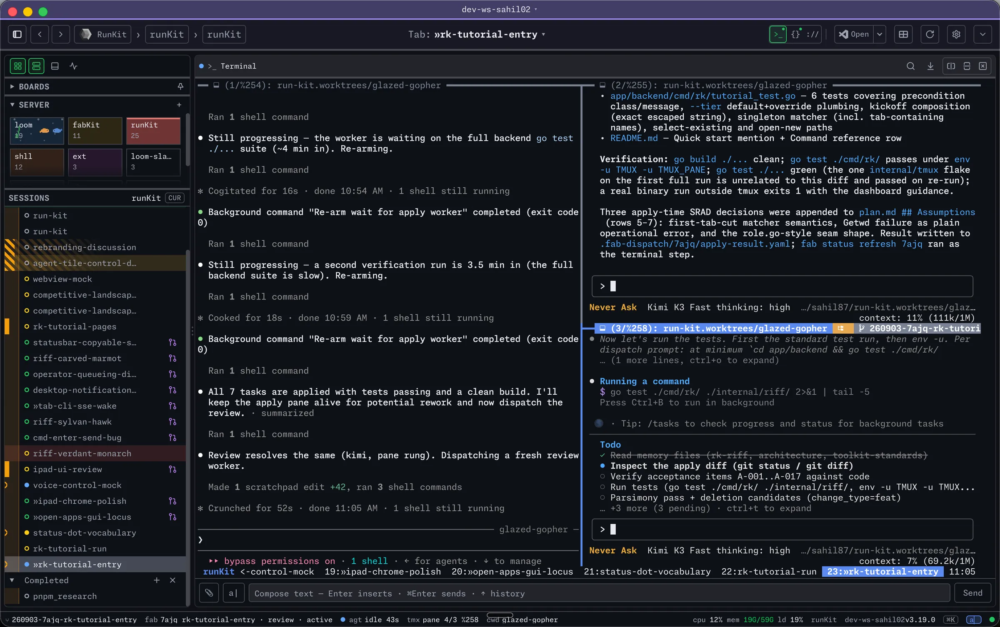
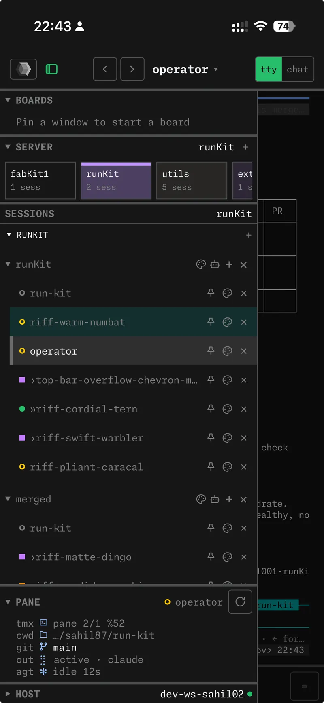
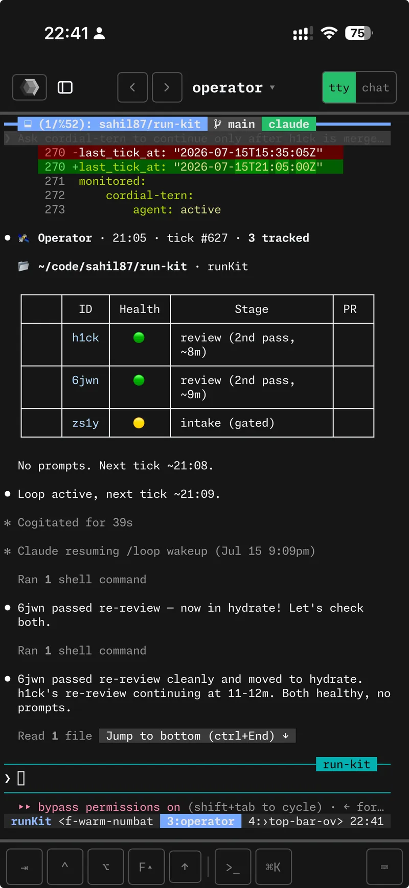

Your tmux, in the browser and on your phone.
Cockpit for the agent era.
A remote console for the machine you actually work on. Every tmux session and pane is a live terminal, at your desk or on the couch. Over your own network, nothing to configure, no database.
- Every tmux session and pane in a sidebar, from anywhere
- Tap one on your phone and you are in the shell you left at your desk
- Pin three agents and the dev server into one board
- Working, waiting, idle: one dot per window says which
- State read straight from tmux, nothing to sync


One machine, every device you own
The only prerequisite. rk doctor reports your version and everything else.
Claude Code, Codex, Gemini CLI, Copilot CLI, Kimi Code, OpenCode and Antigravity report working, waiting or idle.
Agent hooksState is read from tmux and the filesystem on every request. Nothing to migrate, nothing to lose.
The mental modelEasy, secure access
to your own machine
Serve the dashboard over Tailscale and open it on your phone. Same sessions, same boards, same panes. A key bar for tab, ctrl and arrows. Nothing leaves your tailnet.
# one time: let tailscale serve run without sudo $ sudo tailscale set --operator=$USER # serve the dashboard over your tailnet, with HTTPS $ tailscale serve --bg http://localhost:3000 → https://dev-ws.tail1a2b.ts.net

Install takes minutes
One line via Homebrew, tap trust handled. Then rk daemon start and open the dashboard.
Any agent, untouched
HexoKit reads no agent's output and speaks no agent's protocol. A pane is just a pane.
Push, even with the tab closed
rk notify sends a real notification to your phone. The agent waiting on you is one tap away.
Shipping daily, in the open
The operator's Quake console
One shortcut and the operator slides down over whatever you are looking at. Ask, get an answer, send it back up.
Release notesrk operator request
Hand the operator a templated work item from the shell. A GUI toolbar for every viewer.
Release notesGUI agent verbs
rk gui windows, click, type, key, clipboard and lock. Agents drive the same display you watch.
Release notesThe agent plans before it builds
- fab-kit puts an intake stage in front of every change. No code until the plan clears.
- Four questions per decision: how clear was the signal, how reversible is it, can the agent know this, how many readings are there.
- The change starts at 5.0 and every weak decision costs points. Under 3.0 the gate closes and the pipeline tells you what to clarify.
- Review runs in a fresh sub-agent and loops back up to three times.
$ fab score --check-gate 7ajq confidence 2.6 / 5.0 · gate 3.0 · blocked 1 unresolved: auth provider — run /fab-clarify $ fab score --check-gate 7ajq confidence 3.4 / 5.0 · gate 3.0 · pass
One agent watches the others
rk riff -N 3 starts three agents in three worktrees with one command. rk operator opens a coordinator you talk to. It starts the next change, unblocks a stuck one, and pings your phone. One shortcut and its console slides down over any tab.
Give the agent a screen
rk gui on puts a desktop in a tile beside your terminals. The agent drives it with rk gui exec, shot, click and type. You watch from the browser or your phone. Off by default, and yours to switch off.
/fab-newwt createidea addtu --watchhop --all pullshll setup agentHexoKit is the base. Each tool adds one thing.
Six small CLIs, MIT, one tap. Drop any one and the rest keep working. They compose through files, not a shared daemon.
One line,
then you are in.
curl -fsSL hexokit.com/install | sh